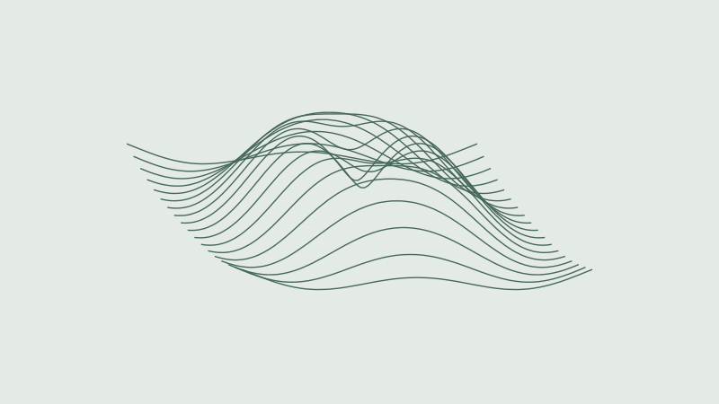
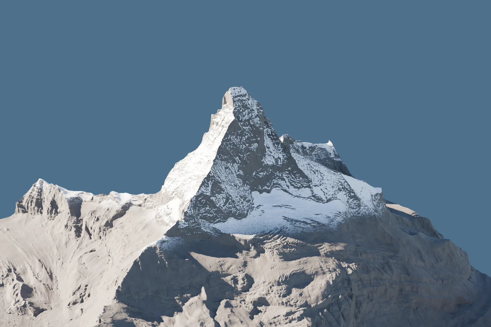
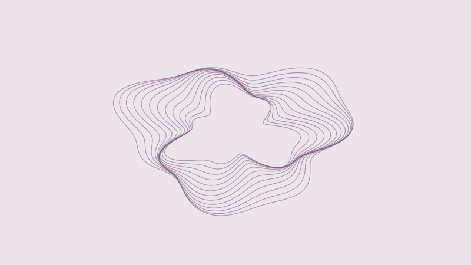
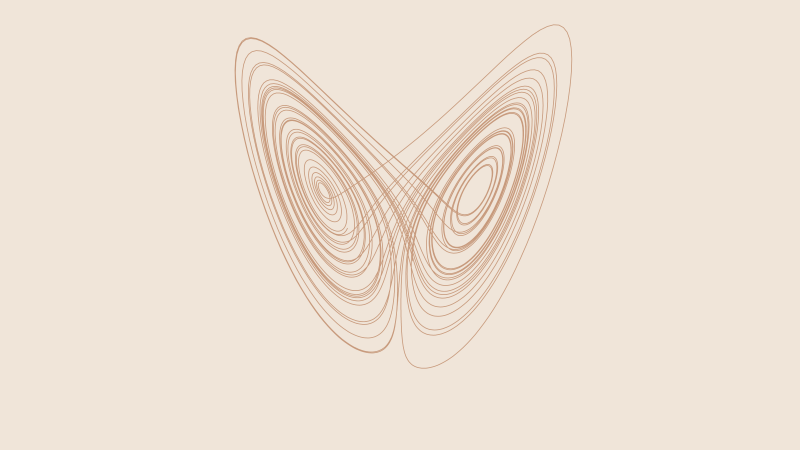
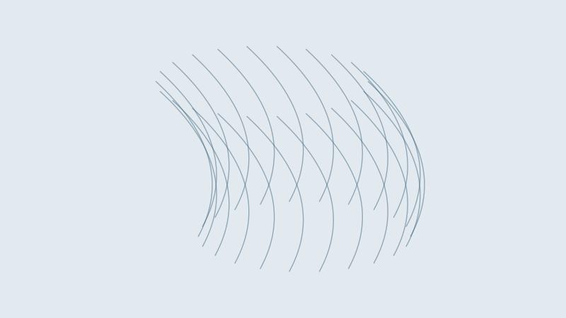
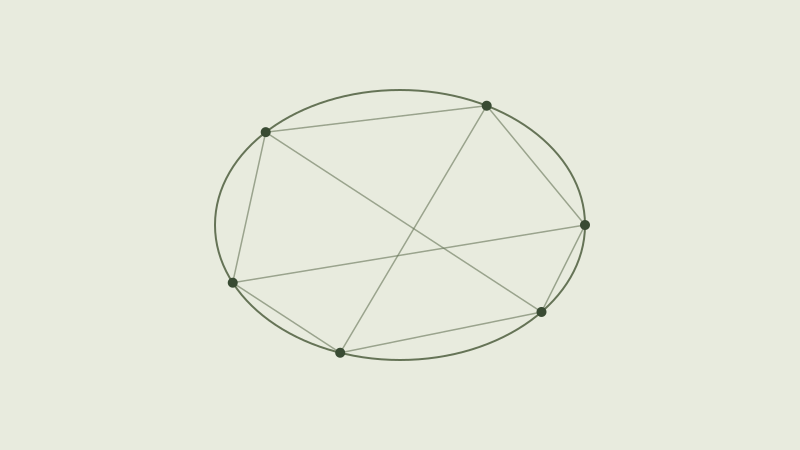

PFEM · 几何
几何流
Surface Flow Gallery
曲面扩散、Willmore 与 Helfrich 流的交互观察。
数学、自然与空间的交互实验。
选择一个方向，打开一个世界。所有项目，按主题收录于此。

NEW STUDY ↗从方程与定理出发，观察结构如何变化。

Surface Flow Gallery
曲面扩散、Willmore 与 Helfrich 流的交互观察。

Complex dynamics
改变复参数，观察分形边界的分岔与重组。

Chaotic ODE Gallery
旋转探索 Lorenz 等六组三维混沌吸引子。

Vector Bundle Gluing
沿两张坐标图观察过渡函数与标架粘合。

Pascal Hexagram
拖动圆锥曲线上的六点，验证三点共线。
水面、山脊与光照，探索自然的形与动。
走进三维空间，也亲手改变它的布局。
解一道谜题，观看序曲，或把图片变成立体。
没有找到相关项目。试试“山体”“几何”或“3D”。